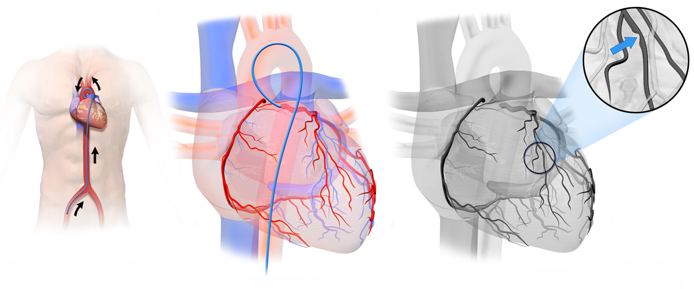

Ficha del catálogo
Angiografía coronaria
- Sistema
- Cardiovascular
- Modalidad
- RX
- Región
- Corazón
- Dificultad
- Avanzado
Estudio invasivo en el que se inyecta contraste yodado directamente en las arterias coronarias mediante un catéter, obteniendo imágenes en tiempo real por fluoroscopia. Es el patrón de referencia para valorar la enfermedad coronaria y permite tratar en el mismo acto.
Técnica
Se accede por la arteria radial o femoral y se avanza el catéter hasta el ostium coronario. Se adquieren series en múltiples proyecciones oblicuas para desplegar todos los segmentos arteriales sin superposiciones.
Qué observar
- Anatomía coronaria: Tronco común izquierdo, descendente anterior, circunfleja y coronaria derecha
- Estenosis: Estrechamientos de la luz arterial, cuya severidad se expresa en porcentaje respecto al segmento sano vecino
- Oclusiones totales, con ausencia completa de opacificación distal
- Circulación colateral que rellena de forma retrógrada territorios ocluidos
- Flujo distal y velocidad de progresión del contraste
- Resultado tras angioplastia y colocación de stent, valorando la recuperación del calibre
Hallazgos
Estudio angiográfico que demuestra el árbol coronario opacificado con contraste, permitiendo evaluar el calibre de cada segmento.
Perlas
Se considera significativa una estenosis mayor del 70% en una arteria epicárdica, o mayor del 50% en el tronco común izquierdo, porque este último irriga gran parte del miocardio y su compromiso implica un riesgo mucho mayor.
Diagnóstico diferencial
- Espasmo coronario
- El estrechamiento es focal, aparece de forma transitoria y desaparece tras administrar nitroglicerina intracoronaria, a diferencia de la placa fija.
- Puente miocárdico
- El segmento arterial se comprime únicamente durante la sístole y recupera su calibre normal en diástole, patrón dinámico que lo identifica.
- Disección coronaria espontánea
- Se aprecia un estrechamiento largo y liso o un doble contorno luminal con flap, con frecuencia en arterias distales y sin la irregularidad típica de la ateroesclerosis.
- Trombo intracoronario agudo
- Aparece como un defecto de repleción de bordes definidos rodeado de contraste, con frecuencia móvil y sin la calcificación ni el remodelado de una placa crónica.
- Anomalía de origen o trayecto coronario
- La arteria nace de un seno distinto del habitual o describe un trayecto atípico, lo que se define mejor con angiotomografía coronaria que con el cateterismo.
- Reestenosis intrastent
- El estrechamiento se localiza dentro o en los bordes del stent previamente implantado, con contorno liso y proliferativo.
Simuladores
- El acortamiento y la superposición de segmentos en una proyección inadecuada hacen parecer normal una estenosis o crear una falsa (por eso se adquieren múltiples proyecciones ortogonales).
- El catéter puede amortiguar la presión o inyectar de forma incompleta y simular una oclusión ostial que en realidad no existe.
- La opacificación insuficiente por inyección débil deja segmentos poco rellenos que se interpretan como lesiones.
- Las ramas superpuestas sobre el vaso principal generan imágenes de aparente irregularidad que se resuelven angulando la mesa o el arco.
Por modalidad
- RX
- La angiografía por fluoroscopia es el patrón de referencia y permite tratar en el mismo acto con angioplastia y stent.
- TC
- La angiotomografía coronaria es no invasiva, tiene un valor predictivo negativo muy alto para excluir enfermedad y cuantifica el calcio coronario.
- RM
- Valora perfusión miocárdica, viabilidad y función sin radiación, y ayuda a decidir si una estenosis tiene repercusión funcional.
- US
- El ecocardiograma detecta alteraciones segmentarias de la contractilidad, y el ultrasonido intravascular caracteriza la placa y optimiza el implante del stent.
Protocolo
Se realiza en sala de hemodinámica con monitorización continua y bajo asepsia. Se punciona la arteria radial, preferida por su menor tasa de complicaciones, o la femoral, se introduce un introductor y se avanza un catéter preformado por vía retrógrada hasta el ostium coronario correspondiente. Se inyecta contraste yodado a mano o con inyectora mientras se adquieren series de cine en múltiples proyecciones oblicuas anteriores derecha e izquierda con angulaciones craneal y caudal, elegidas para desplegar cada segmento sin superposiciones. Se administra anticoagulación durante el procedimiento, se emplean nitratos intracoronarios cuando conviene y se controla la dosis de radiación y el volumen de contraste, especialmente en pacientes con insuficiencia renal.
Clasificación
La gravedad de la estenosis se expresa como porcentaje de reducción del diámetro respecto al segmento sano adyacente y se considera significativa por encima del setenta por ciento en una arteria epicárdica, o por encima del cincuenta por ciento en el tronco común izquierdo. El flujo distal se gradúa con la escala TIMI, de cero a tres, desde la ausencia total de flujo hasta el flujo normal, y es un parámetro clave en el infarto agudo. Las oclusiones crónicas y la circulación colateral se describen con escalas específicas de relleno retrógrado. En las lesiones de significación dudosa se recurre a la medición de la reserva fraccional de flujo, que valora la repercusión funcional.
Errores frecuentes
- Valorar una estenosis en una sola proyección, cuando el acortamiento y la superposición pueden ocultarla o exagerarla.
- No reconocer un puente miocárdico y tratarlo como lesión fija, pese a que su compresión es únicamente sistólica.
- Subestimar lesiones del tronco común o de los ostiums por amortiguación del catéter o por relleno incompleto.
- Basar la decisión terapéutica solo en el porcentaje visual en lesiones intermedias, sin apoyarse en la valoración funcional.

coronaria angiografia cateterismo estenosis stent corazon fluoroscopia